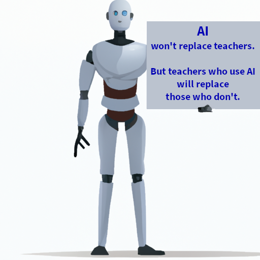

Por quê?
Porque não acho certo ter em relação a estas ferramentas a mesma resistência que nossos antecessores tiveram em relação a calculadoras e computadores em sala de aula.
Nesta postagem
Por enquanto, minha idéia é listar vídeos e artigos com discussões a respeito, com alguns primeiros comentários meus.
No futuro, incluir comentários mais aprofundados, assim como resultados de meus próprios experimentos.
TALMO, 07/06/2023
Neste evento online,1 dois professores de universidades inglesas discutiram sobre o uso de LLMs no ensino de matemática.
Cesare G. Ardito, da Universidade de Manchester, fez a primeira apresentação:
Os slides estão disponíveis em pdf.
Tópicos:
O que é um LLM?
Como funciona?
Parâmetros: temperatura, tamanho do contexto etc.
Bing AI tem um monólogo interior!
Os LLMs do futuro (integrados, multimodais, acessíveis, especializados).
Estudos de 2023 sobre LLMs em matemática.
Vantagens de supervisionar o processo, em vez de supervisionar apenas a resposta.
Experimentos com LLMs resolvendo questões de matemática.
Os erros dos LLMs devem ser usados para desenvolver o senso crítico dos alunos.
Os alunos já usam LLMs no seu estudo. É melhor que, pelo menos, tenham orientação para isso.
Ao invés de reprimir o uso de LLMs, os professores devem ensinar aos alunos como usar estas ferramentas de forma crítica, sem prejudicar os métodos de avaliação. Aliás, como adaptar os métodos de avaliação?
Detectar o uso de LLMs pelos alunos é tarefa impossível, apesar do marketing em contrário.
Sugestões para o uso de LLMs no ensino e na administração.
Murray Shanahan – Talking about Large Language Models. https://arxiv.org/abs/2212.03551.
Cleo Nardo - Remarks (1-18) on GPT (compressed). https://www.lesswrong.com/posts/7qSHKYRnqyrumEfbt/remarks1-18-on-gpt-compressed.
Sadasivan, Kumar, Balasubramanian, Wang, Feizi, “Can AI-Generated Text be Reliably Detected?”, https://arxiv.org/abs/2303.11156 (2023).
Cotton, Cotton,Shipway, “Chatting and Cheating: Ensuring academic integrity in the era of ChatGPT.” Preprint. https://doi.org/10.35542/osf.io/mrz8h (2023).
Michael Grove, “ChatGPT And Assessments In The Mathematical Sciences”, TALMO. http://talmo.uk/blog/feb2023/chatgpt.html (2023).
Michael Webb, “A generative AI primer”, JISC. https://nationalcentreforai.jiscinvolve.org/wp/2023/05/11/generativeai-primer/.
Sue Attewell et al, Generative AI and students concerns, JISC. https://nationalcentreforai.jiscinvolve.org/wp/2023/06/05/generative-ai-and-student-concerns/.
“I know a lot of teachers are worried that students are using GPT to write their essays. Educators are already discussing ways to adapt to the new technology, and I suspect those conversations will continue for quite some time. I’ve heard about teachers who have found clever ways to incorporate the technology into their work — like by allowing students to use GPT to create a first draft that they have to personalize.” Bill Gates, https://www.gatesnotes.com/The-Age-of-AI-Has-Begun#ALChapter5.
A student’s insight when falsely accused of plagiarism by a GPT “detector” on Reddit: https://www.reddit.com/r/NoStupidQuestions/comments/11rzus1/my_teacher_told_me_my_essay_didnt_pass_the/.
A segunda apresentação foi de Peter Klappa, da Universidade de Kent:
Os slides também estão disponíveis em pdf.
Aqui, Peter Klappa traz sugestões concretas para usar LLMs, com os seguintes objetivos:
Aprimorar a escrita dos alunos.
Traduzir texto.
Fazer pesquisa bibliográfica.
ElicitHá pouco tempo, descobri o Elicit, um LLM criado para buscar e resumir artigos científicos, sobre o qual devo escrever em outra postagem.
Gerar problemas e soluções.
Gerar código a partir de requisitos em linguagem natural.
Auxiliar alunos com problemas de acessibilidade e outras deficiências.
Além disso, discute questões éticas, de propriedade intelectual e de segurança.
No final, oferece sugestões concretas para ensinar aos alunos como usar LLMs.
Conclusões (por enquanto)
Talvez devamos convencer nossos alunos a tratar os LLMs como seus colegas em trabalhos em grupo — colegas com um pouco mais de conhecimento, mas propensos a erros tão ou mais básicos que os erros cometidos por nossos alunos.
Seja como for, em vez de proibir que alunos usem LLMs, devemos ensinar a eles como tirar melhor proveito destas ferramentas. Para tanto, devemos nós mesmos, professores, aceitar que LLMs estão aqui para ficar e aprender como usá-los na nossa prática.
Pois, como diz a frase no final da apresentação de Peter Klappa, ilustrada por Dall-E:2
